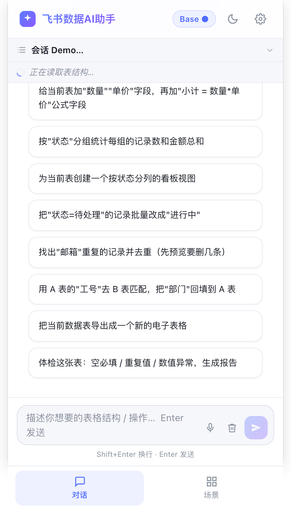
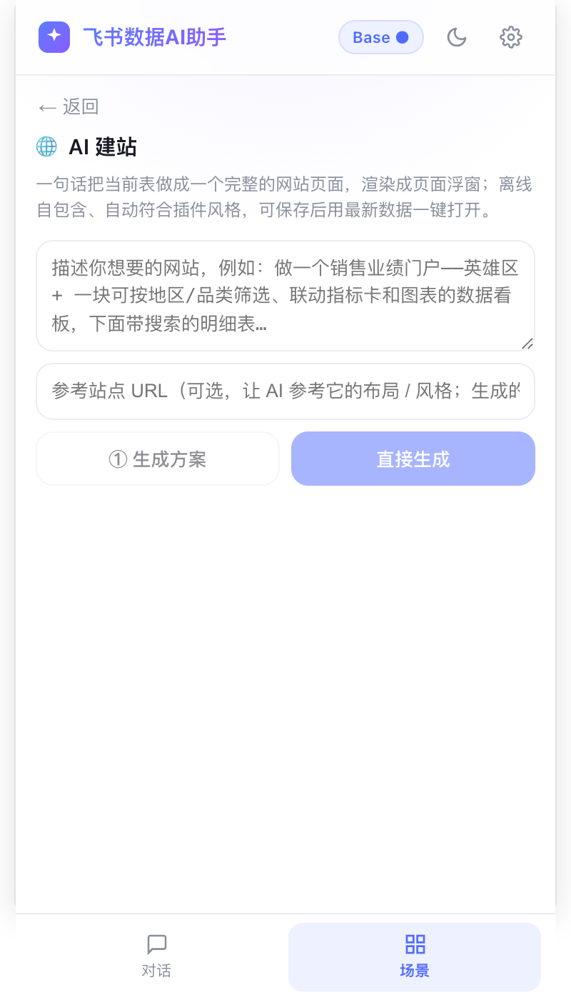
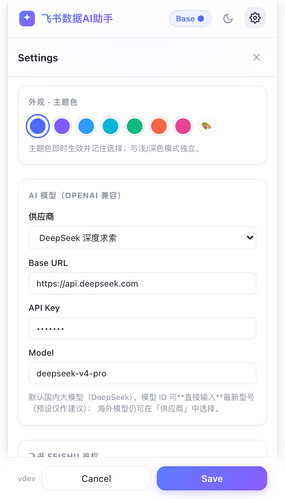
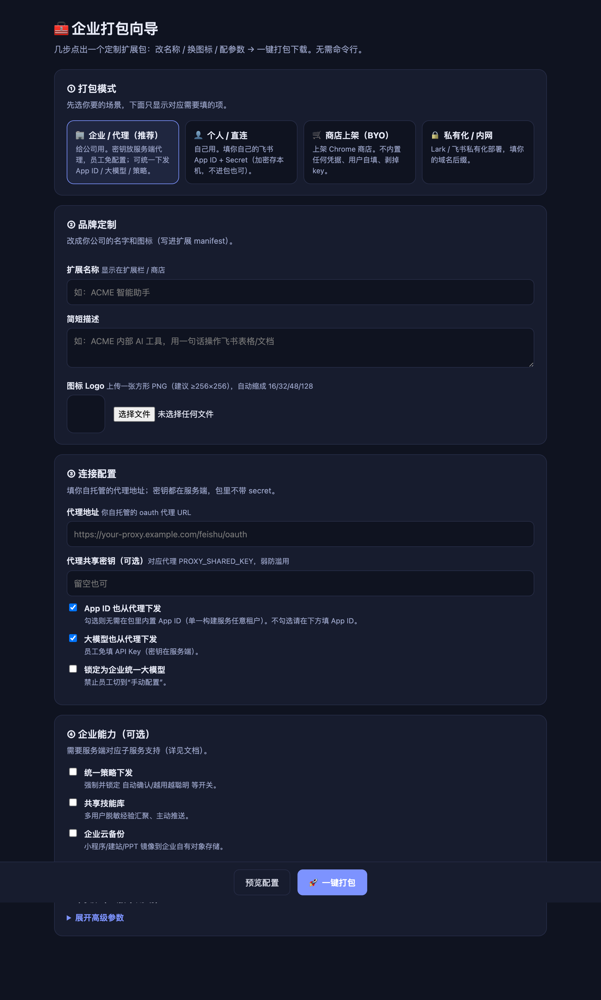

概览
Chrome MV3 扩展：在飞书 多维表格 / 电子表格 / 文档 页用自然语言操作，并把数据做成 看板 / 网站 / PPT，还能做文档质检。无后端也能用，全部以用户本人飞书身份操作。
① 客户端（扩展）
React 18 + TS + Vite + ECharts。装上即用；个人版零服务端。
React 18 + TS + Vite + ECharts。装上即用；个人版零服务端。
能力一览
| 能力 | 说明 | 需要服务端？ |
|---|---|---|
| 自然语言操作多维表格/电子表格/文档 | 读、写、批量改、行级写回、建表/字段，全程用户身份 + 危险操作确认门 | 否 |
| 看板 / AI建站 / PPT / 文档质检 | 把数据做成 ECharts 看板、自包含网站、可翻页 PPT；通读文档挑质量问题 | 否 |
| 越用越聪明（本地经验） | 成功套路在本机沉淀，下次自动参考 | 否 |
| 本地配置备份 | 导出/导入文件防个人数据丢失（所有版本可用） | 否 |
使用
安装与上手
🟢 免构建（装商店版）：从 Chrome 网上应用店 点「添加至 Chrome」省去克隆/构建/加载。商店版不内置凭据，仍用你自己的飞书应用：建好应用后在扩展「设置 → 自建飞书应用」填 App ID/Secret + 登记设置里显示的回调 + 飞书授权 + 大模型 Key。
下面的命令是自行构建才需要（想把 App ID 打进包、二次开发）：
1) git clone && npm i
2) npm run build # 产物在 dist/
3) chrome://extensions → 打开「开发者模式」→「加载已解压的扩展程序」→ 选 dist/
4) 打开任意飞书多维表格/电子表格/文档页，点扩展图标开侧边栏
5) 设置 → 填 OpenAI 兼容大模型（Base URL/Key/Model）+ 用飞书账号一键授权最安全的个人姿势：什么都不内置，用「飞书账号授权」（user-token）。AI 只以你本人的权限操作，绝不使用应用身份越权。
能做什么（侧边栏对话即可）
- 操作数据：「把 A 列按月汇总」「筛掉重复行」「给这几行建任务」——批量改一次性提交、删除走确认门、可一键撤销。
- 看板/小程序：「按分类做个销售额柱状图」→ 浮窗渲染，可导出 PDF / 生成飞书文档 / 推送到群。
- AI 建站：把当前表做成一个自包含网站。
- AI 幻灯片：文档/数据一键转可翻页 PPT。
- 文档质检：通读整篇，挑出逻辑断点、未定义术语、前后矛盾、遗留 TODO、空小节等。
- 网页剪藏：把当前网页内容剪藏进多维表格。






🧰 一键打包向导（图形化 · 给小白）
不想碰命令行 / .env？跑一条命令打开网页向导，选模式 → 改名称 / 换图标 → 填参数 → 一键打包下载，全程不用敲配置：
npm run package:ui # 打开 http://localhost:8799（仅本机）
- 2 种模式：个人·直连 / 商店·BYO——选哪个就只显示哪些字段，不会填错。
- 品牌定制：改扩展名称、描述；上传一张方形 PNG，自动缩成 16/32/48/128 写进
manifest（不动源文件）。 - 连接：App ID、大模型域名白名单、外发脱敏，勾选即配。
- 高级：无远程代码、单次外发上限、OAuth scope、IP CIDR、剥 manifest key。
- 安全：表单只落到本机
.env.package.local（已 gitignore）；打包前临时挪开你的.env.local保证产物“只含这次填的”；构建结束自动还原。商店模式强制不内置任何凭据并剥 key。
打完点「下载」拿到 .zip 解压，chrome://extensions → 开发者模式 →「加载已解压」即可；也可直接加载项目里的 dist/。底层就是驱动 npm run build -- --mode <模式> + 后处理 manifest/图标，和手动构建产物一致。
部署 · 个人 / 直连
两种鉴权模式，按安全性从高到低：
| 模式 | 构建配置 | secret 去向 |
|---|---|---|
| A. 纯 user-token（推荐） | 什么都不内置 | 无 secret；用户授权拿自己的 token |
| B. 直连·密码加密 | VITE_FEISHU_APP_ID + VITE_FEISHU_APP_SECRET_ENC（密文） | 密文进包，运行时输口令解锁 |
# B. 生成加密 secret（按提示输入 secret + 口令）
node scripts/encrypt-secret.mjs
# 填 .env.local：VITE_FEISHU_APP_ID=cli_xxx VITE_FEISHU_APP_SECRET_ENC=<密文> VITE_FEISHU_APP_SECRET=（留空）
npm run build部署 · 商店 / BYO 包
对外上架版：用户自带飞书应用（填 App ID + Secret），不内置任何凭据，剥掉 manifest key。
npm run build -- --mode store # VITE_WEBSTORE=1：剥 key + 商店名/描述；不内置 secret
# 校验：dist 里无 appid、无 secret本地配置备份等无服务端依赖的能力照常可用。
环境变量速查
客户端（构建期 VITE_*，写在 .env.<mode>.local）
| 变量 | 作用 |
|---|---|
VITE_FEISHU_APP_ID | 内置 App ID |
VITE_FEISHU_APP_SECRET / _ENC | 明文 / 密文 secret |
VITE_LLM_REDACT / _MAX_PAYLOAD_CHARS | 外发 LLM 前脱敏 / 单载荷上限 |
VITE_WEBSTORE / VITE_NO_REMOTE_CODE | 商店打包(剥 key) / 无远程代码(声明式渲染) |
架构
① 你说一句话，数据怎么流（个人版·无后端）
你说一句 → AI 规划并调用工具（先过白名单 + 危险操作确认门）→ 以你本人飞书身份执行。个人版没有任何后端。
关键约束（代码里硬编码的边界）
- 只用用户身份：
auth.ts resolveToken绝不回退 tenant。 - 文件级删除一律拒绝；内容删除走确认门（
DESTRUCTIVE_TOOLS）。 - 通用 API 白名单：禁 im/通讯录/权限/所有权。
- 出站只走
feishuReq/feishuFetch；大模型走assertSafeBaseUrl。 - 沙箱隔离：生成代码在 opaque origin +
connect-src:'none'。 - secret 不进明文包；写操作不自动重试。
深结构见 docs/ARCHITECTURE.md。
安全模型
客户端
- 身份闸门：AI 始终以用户本人飞书身份操作，绝不回退应用/租户身份越权。
- 破坏性操作：文件级删除硬阻断；内容删除/通用写入走确认门（可一键撤销）。
- 出站守卫：飞书只走
feishuReq/feishuFetch；大模型 Base URL 经assertSafeBaseUrl+ 可选 host 白名单。 - 沙箱：LLM 生成的渲染代码在 opaque origin、
connect-src:'none'、无allow-same-origin。
完整威胁矩阵、应急流程、历史审计项见
docs/SECURITY_AUDIT.md。本仓库经过两轮代码审查 + 一轮安全审查，所有中危及以上风险已整改。验证 · 测试
每次改完都跑（迭代循环）：
npm run typecheck # 必须 0 错
npm test # 单元测试全绿（~460 用例）
npm run build # 必须成功
看板/PPT/质检 的纯逻辑由 src/shared/features-validate.test.ts 用合成销售数据校验（含手算期望）。
FAQ
个人用，必须自建服务端吗？
不用。个人版零服务端，用「飞书账号授权」即可。
不用。个人版零服务端，用「飞书账号授权」即可。
更多
见
见
docs/FAQ.md · docs/USER_GUIDE.md · docs/STORE_PUBLISHING.md。本页为离线单文件文档（零依赖）。源与更多细节：README.md · docs/ARCHITECTURE.md · docs/SECURITY_AUDIT.md · docs/DEPLOYMENT.md。